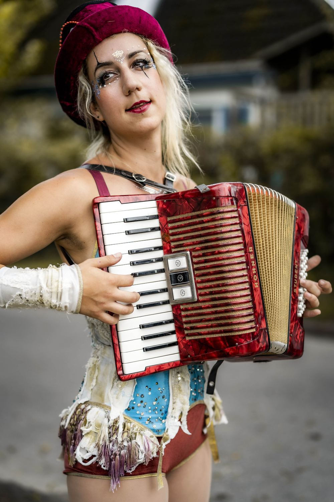
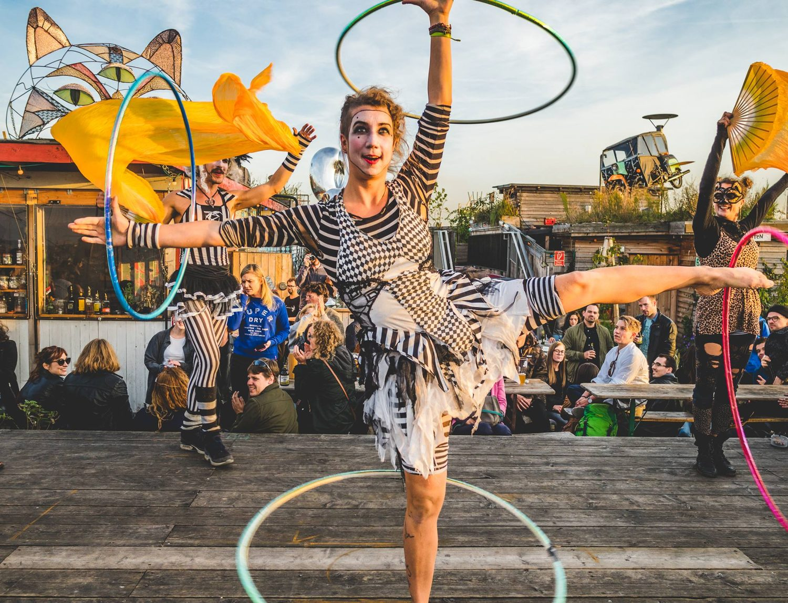
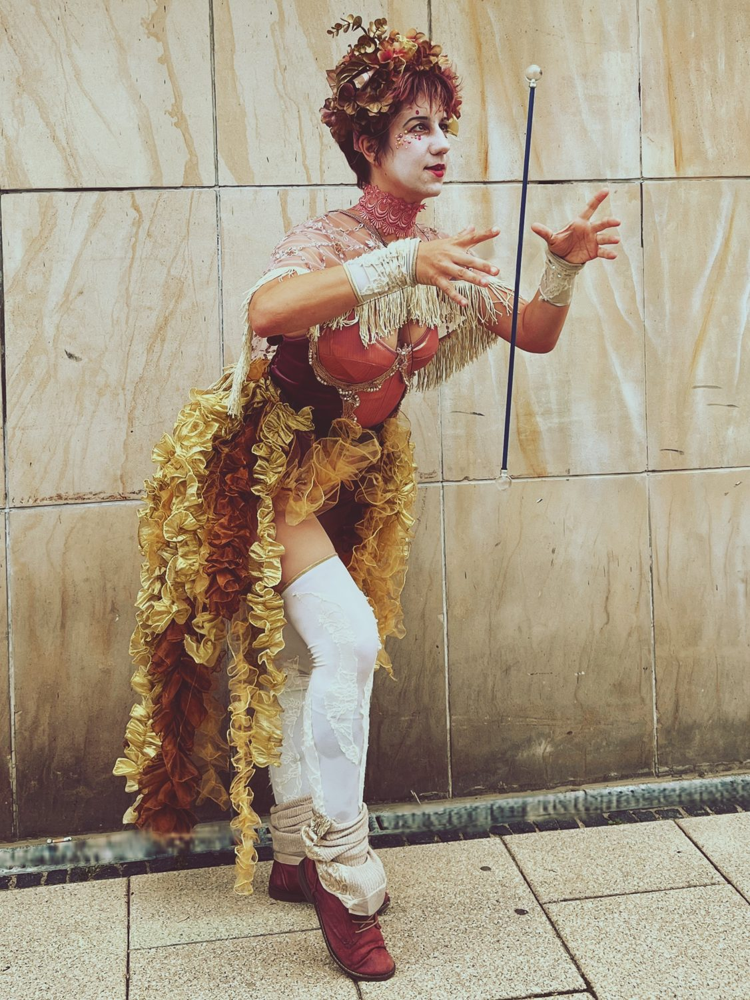
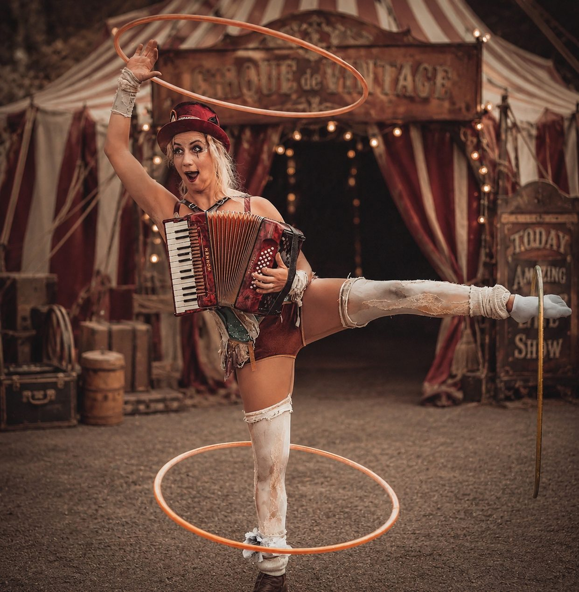
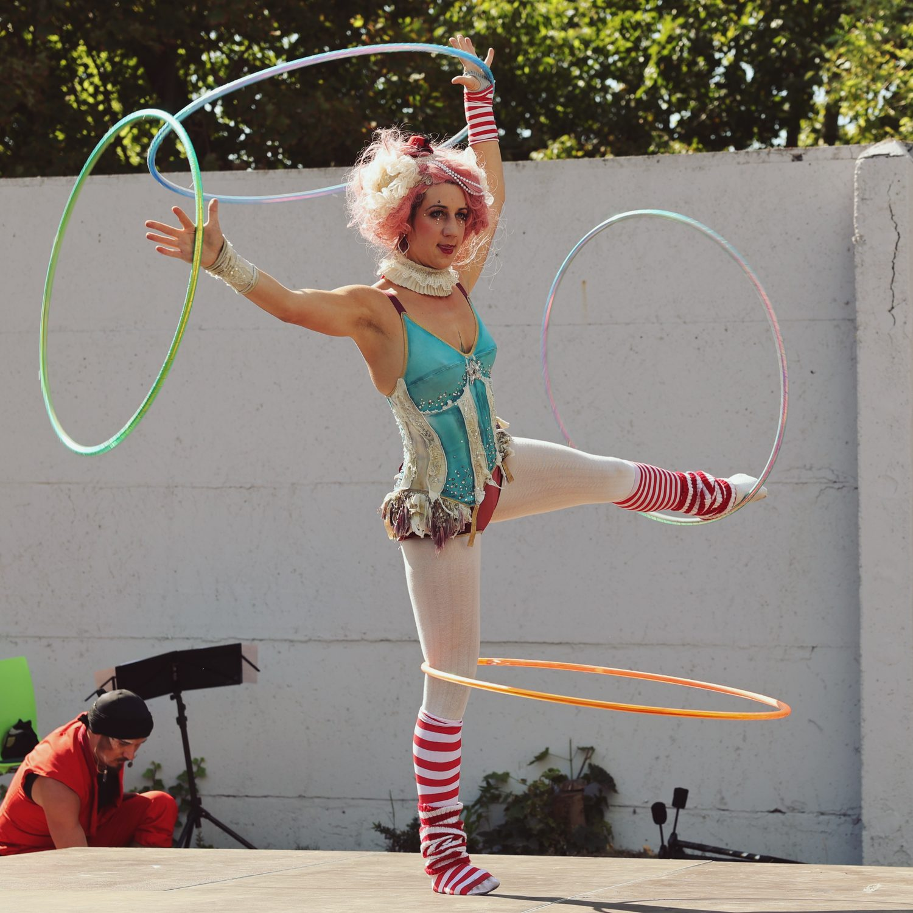
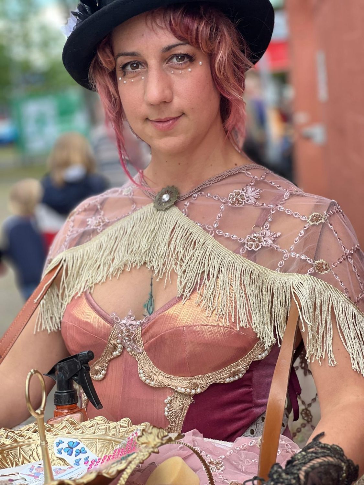
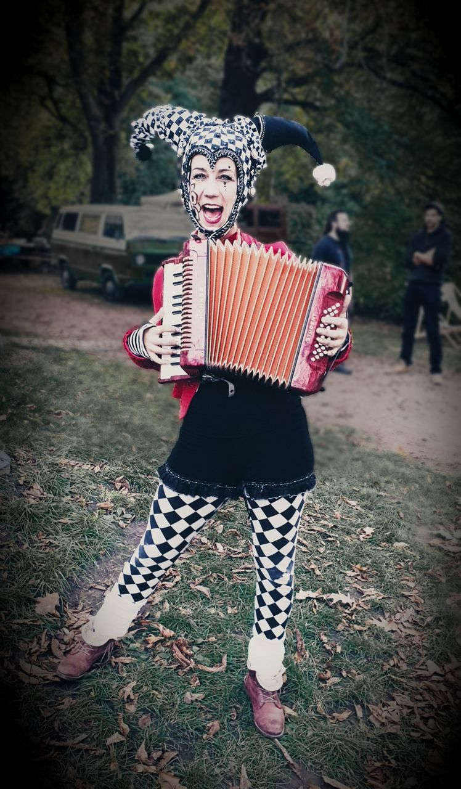

Which themes are possible?
Vaudeville and vintage circus, Golden Twenties, Candyland, maritime, floral, fairytale and fantasy — and new ideas are welcome.
Characters for the afternoon: theatrical, playful and made entirely by hand.

Not every event happens after dark. For receptions, garden parties, summer festivals and family celebrations the daylight walking acts bring the same love of detail — in hand-sewn costumes that need no light to shine.
Every theme is its own little world: from the vaudeville harlequin with accordion to the Golden Twenties, from Candyland to maritime, floral or fairytale figures.
Solo, as a duo, or as a larger ensemble with Ley's company Entourage Berlin — including stilt walkers and full costume groups.
Something else in mind? Tell Ley the theme of your event and they will suggest the characters that fit.











Vaudeville and vintage circus, Golden Twenties, Candyland, maritime, floral, fairytale and fantasy — and new ideas are welcome.
Yes. Solo, as a duo or as a larger ensemble with Entourage Berlin, including stilt walkers and full costume groups.
Lucina is the bringer of light — moving gracefully through the crowd, bringing gifts and wonder to those who dare to believe in magic and dreams.
One of the fifty daughters of the old man of the sea: sailors’ songs and longing melodies by day, fireflies and a glowing gown once night falls.
Two fibre-optic beings drifting through the room like deep-sea lanterns — the most elegant of the LED sets, in several rounds of 20 to 30 minutes.